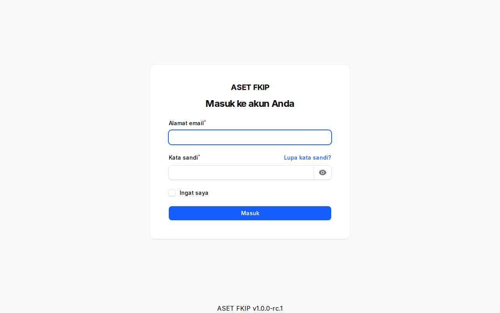
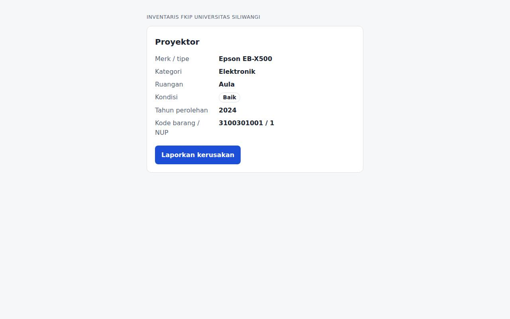
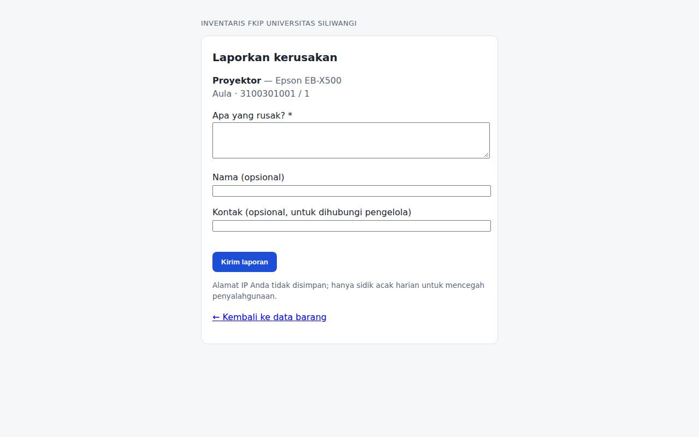
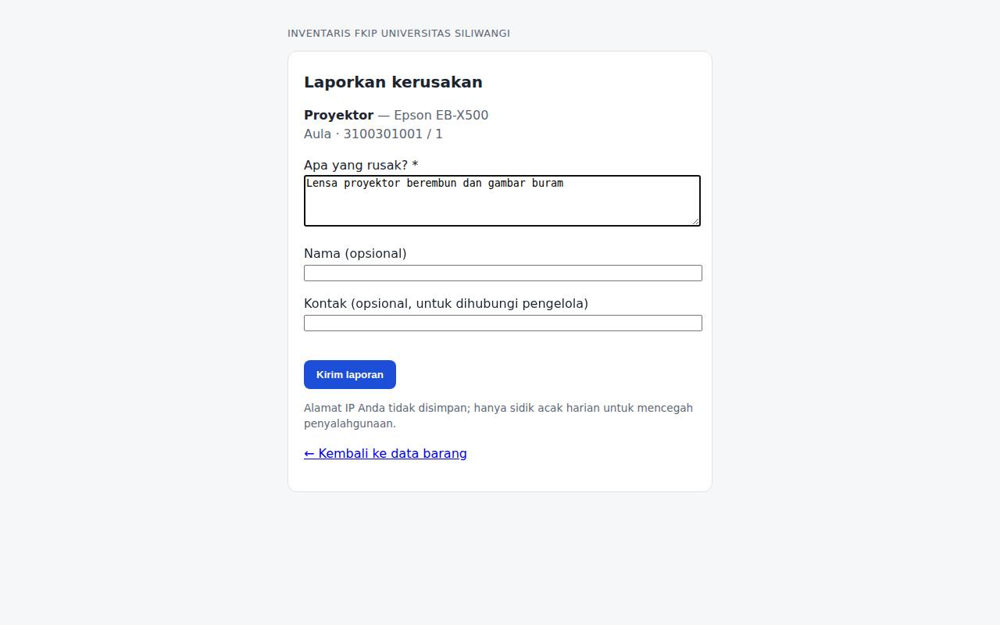

1. Alamat dan masuk
- Buka alamat sistem lalu pilih Masuk. Gunakan surel
@unsil.ac.iddan kata sandi dari admin. Lima kali salah dalam semenit menahan login sementara. - Super-admin dan admin BMN wajib memasang MFA (aplikasi autentikator) pada login pertama, lalu memasukkan kode 6 digit setiap masuk.

2. Memindai QR barang (tanpa login)
- Pindai QR pada label barang dengan kamera ponsel. Halaman publik menampilkan nama barang, merk/tipe, kategori, ruangan, kondisi, tahun perolehan, serta kode barang + NUP.
- Nilai, PIC, peminjam, dan riwayat tidak ditampilkan kepada publik.

3. Melaporkan kerusakan
- Dari halaman barang pilih Laporkan kerusakan. Jelaskan kerusakannya (minimal 5 karakter); nama dan kontak boleh dikosongkan. Dibatasi 5 laporan per jam per perangkat.
- Laporan menjadi tiket pemeliharaan dan PIC ruangan diberi tahu. Tidak ada unggah foto — cukup deskripsi.

